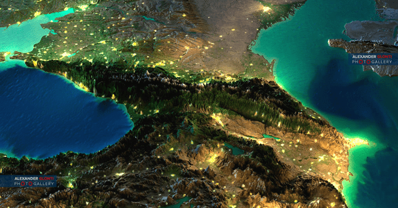
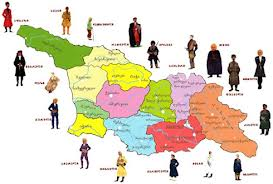
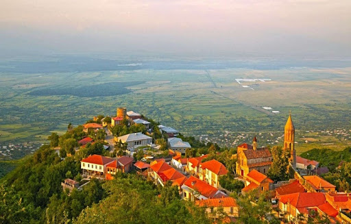
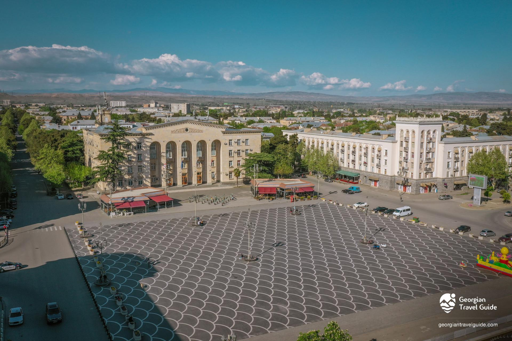
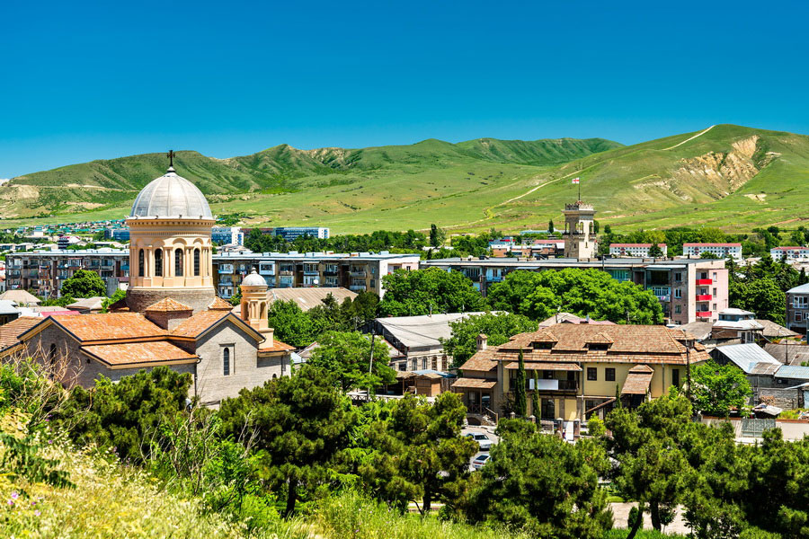
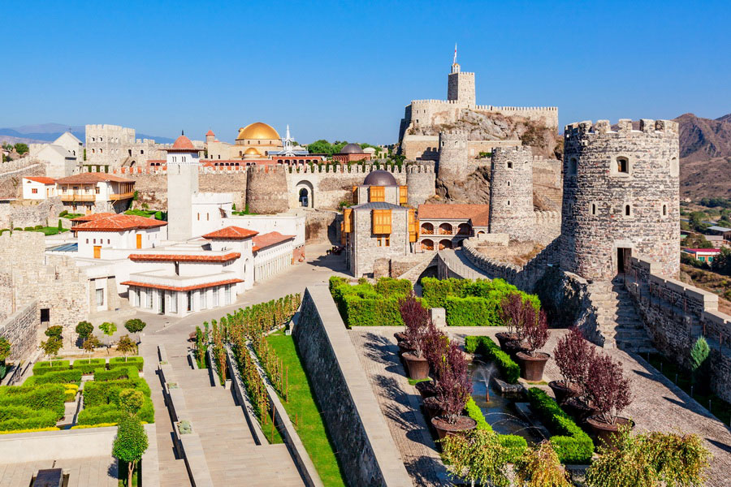
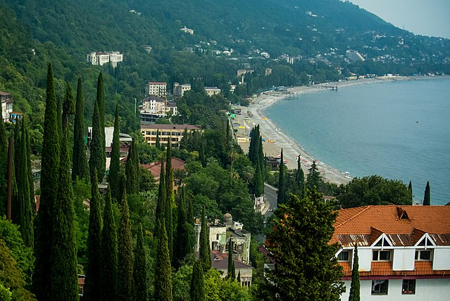
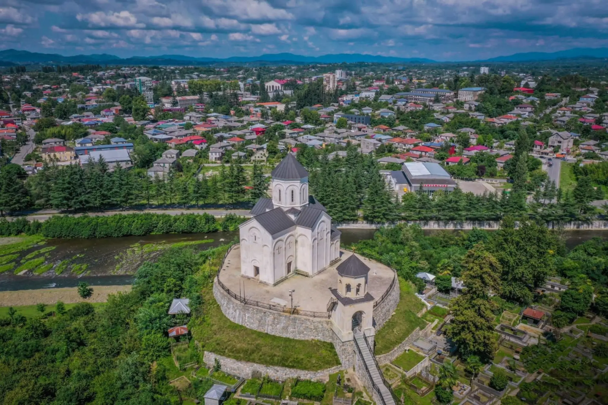
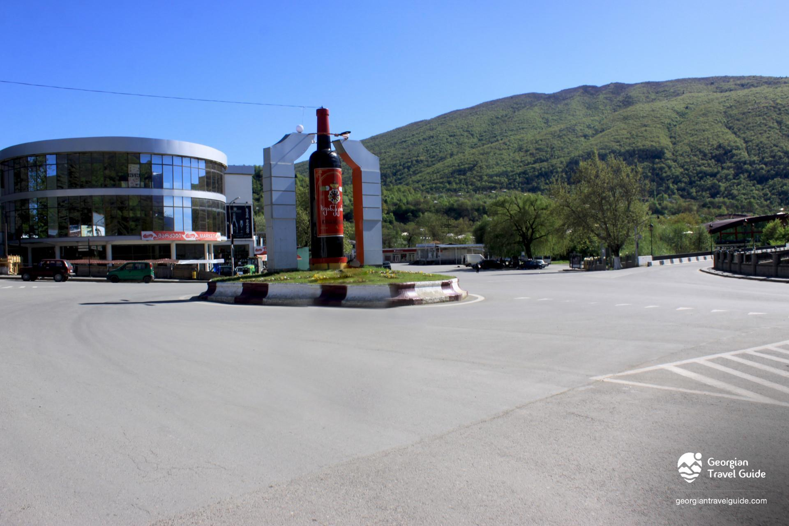
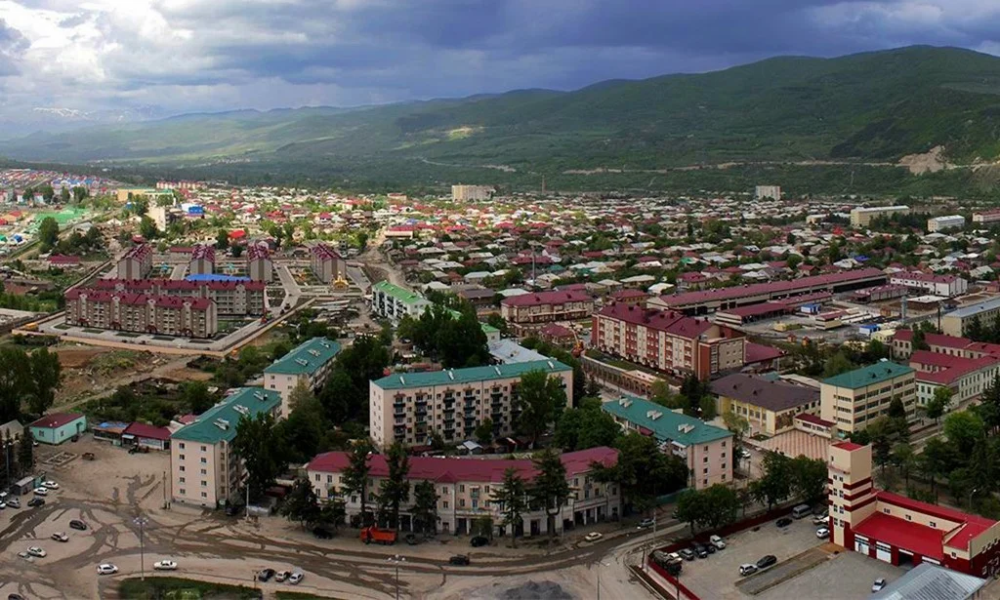

საქართველო და მისი კუთხეები
 კეთილი იყოს თქვენი მობრძანება საქართველოში!
საქართველო სამხრეთ კავკასიაში მდებარე პატარა ქვეყანაა,
უძველესი კულტურული და ისტორიული მემკვიდრეობით.
მისი ისტორია 2500 წელზე მეტს ითვლის.
საქართველო თვალწარმტაცი
ბუნებისა და უძველესი ისტორიის თვალსაზრისით უნიკალური ქვეყანაა.
ამ პატარა ტერიტორიაზე საოცრადაა შერწყმული ყველაზე კონტრასტული,
რაც შეიძლება ადამიანმა წარმოიდგინოს - მარადიული თოვლით
დაფარული მწვერვალები თუ სუბტროპიკული სანაპიროები,
უდაბნო თუ ხშირფოთლოვანი ტყე, თანამედროვე
ქალაქები თუ უძველესი სოფლები.
საქართველოს მოსახლეობა შეადგენს დაახლოებით 5 მილიონს.
ქვეყნის ოფიციალური ენა ქართულია.
ეს არის ერთადერთი ენა იბერიულ-კავკასიურ ენათა ოჯახში,
რომელსაც უძველესი დამწერლობა და საკუთარი ანბანი აქვს.
ქართული ანბანი მსოფლიოში არსებული 14-დან ერთ-ერთია.
მისი წარმოშობის რამდენიმე ვერსია არსებობს, თუმცა ყველაზე
გავრცელებული მოსაზრებით, იგი წინარექრისტიანულ ეპოქაშია შექმნილი.
საქართველოს რეგიონები:
რეგიონები და ქალაქები:
- კახეთი
- სიღნაღი 
- ქვემო ქართლი
- რუსთავი 
- შიდა ქართლი
- გორი 
- სამცხე-ჯავახეთი
- ახალციხე 
- აფხაზეთი
- გაგრა 
- აჭარა
- ბათუმი
- გურია
- ოზურგეთი 
- მცხეთა-მთიანეთი
- მცხეთა
- რაჭა
- ამბროლარური 
- სამეგრელო
- მარტვილი
- სვანეთი
- მესტია
- ცხინვალი
- ცხინვალი 
- იმერეთი
- ქუთაისი